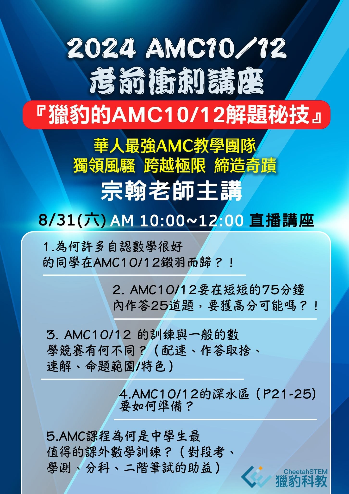

為何許多自認數學不錯的學生，卻在升學大考遭遇挫折！？
——AMC是檢驗你「學習路徑」的照妖鏡
宗翰老師主講
台北時間：8/31(六)AM 10:00~12:00 直播講座
《適合學生》
1. 國中資優生以高中科學班/數資班為目標
2. 高中生以頂尖大學熱門科系為目標
3. 中學生以考好AMC10/12為目標
獵豹數學召集人 AMC頂尖專家
宗翰老師為同學們分析AMC10/12的命題特色與特殊的解題秘技，精彩可期，千萬別錯過！
1. 國中資優生以高中科學班/數資班為目標
2. 高中生以頂尖大學熱門科系為目標
3. 中學生以考好AMC10/12為目標

《再問AMC》
獵豹的孩子為何都要接受AMC的相關訓練！？
1.為何許多自認數學很好的同學在AMC10/12鎩羽而歸！？
2. AMC10/12要在短短的75分鐘內作答25道題，要獲高分可能嗎！？
3. AMC10/12 的訓練與一般的數學競賽有何不同？（配速、作答取捨、速解、命題範圍/特色）
4.AMC10/12的深水區（P21-25)要如何準備？
5.AMC課程為何是中學生最值得的課外數學訓練？（對段考、學測、分科、二階筆試的助益）
—-
獵豹指導學生參與各級數學競賽，歷年成績輝煌！
曾獲IMO (奧林匹亞數學)2金1銀、APMO(亞太）金、CPGE（法國高等學院預科）榜首、TRML團體2金與個人賽滿分，AMC/AIME二十年，獲AMC8多次滿分、AMC10滿分、AMC12滿分、AIME滿分，以及多位入圍USAMO其中有超高總分295、271分入圍。
獵豹老師歷年指導的優秀學生無數，有獲IPhO(奧林匹亞物理）金牌、IOI(奧林匹亞資訊）唯一滿分金…
世界頂尖大學皆有獵豹學子身影:
MIT, Harvard , Stanford, Princeton, Caltech, Oxford, Cambridge, CMU CS, Columbia , UChicago, UCB….
報名請見
https://www.facebook.com/share/p/jQQeRTfKRa3zbcKL/
《費用及報名方式》
定價：NT$1000
零元優惠(擇一)：
方案1. 按讚留言「AMC10+1」並完成公開分享三篇指定FB文
方案2. (限獵豹現役學生)：按讚留言「獵豹AMC10+1」並完成公開分享一篇指定FB文
詳見以下臉書連結：